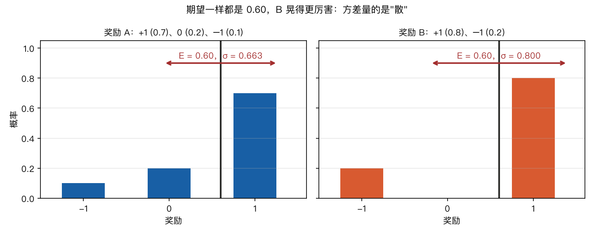
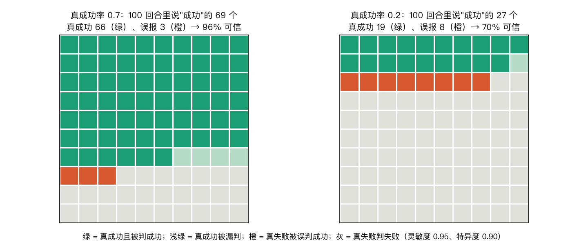
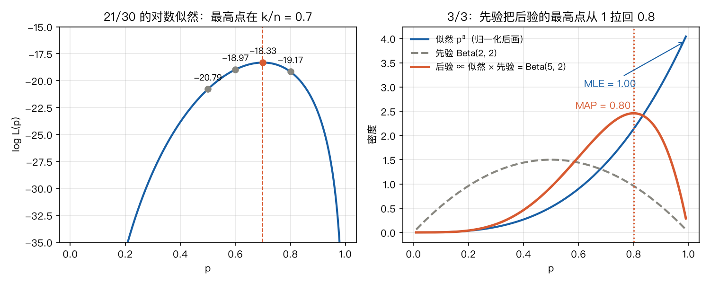
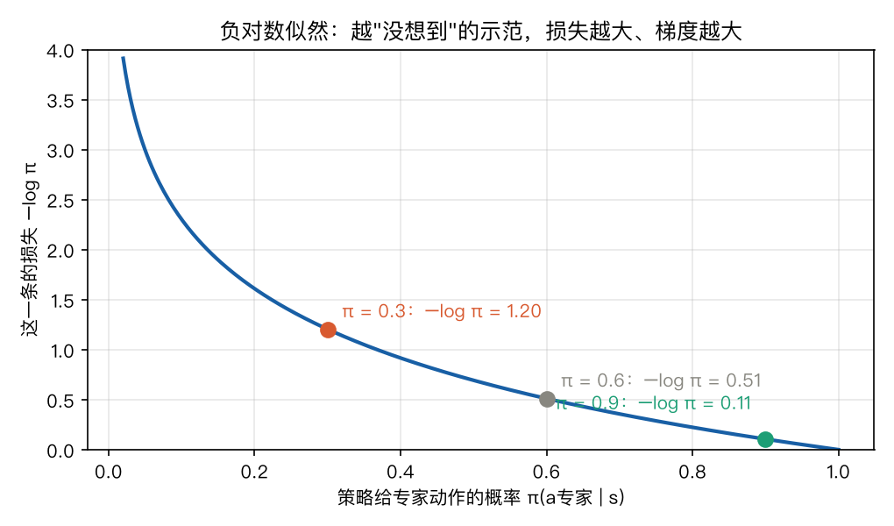
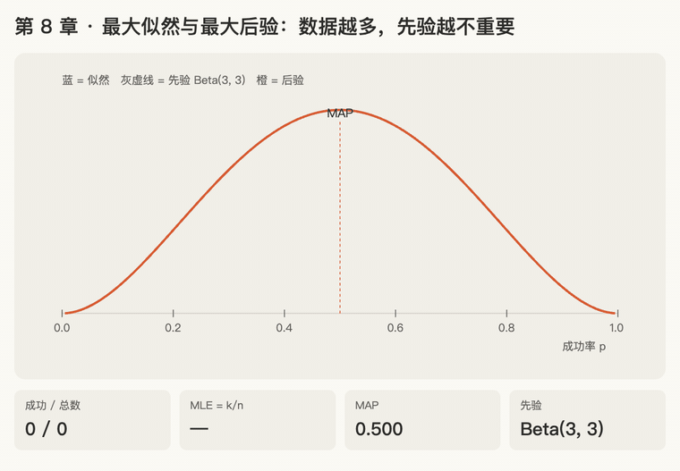

第 8 章 · 概率补课：期望方差、贝叶斯、最大似然与最大后验
本地运行
git clone https://github.com/wikieden/math-and-eval-stats
cd math-and-eval-stats/code/notebooks
pip install jupyterlab torch numpy
jupyter lab ch08_probability_mle_map.ipynb也可以下载后直接用 VS Code 打开 .ipynb 运行。需要 GPU 的章节在 Colab 里选「代码执行程序 → 更改运行时类型 → GPU」。
本章回答：期望和方差到底在算什么？成功检测器说"成功了"，真成功的概率有多大？为什么行为克隆的损失就是"最大似然"？21/30 估成 0.70 是哪来的，加一点先验又会变成多少？
讲解日期：2026-11-23 · 上一章：第 7 章 批判地读 loss 曲线和消融表 · 下一章：第 9 章 高斯分布
对应原文：MML（Mathematics for Machine Learning）§6.3 Bayes' theoremmaterials/text/books/mml-book.txtL10422–L10431（式 6.23）；§6.4.1 期望 L10513–L10530、§6.4.3 方差三种写法 L10816 起、§6.4.4 和与变换 L10879 起；§8.3.1 最大似然 L14659–L14745；§8.3.2 最大后验 L14845–L14880
本章缩写：MLE = Maximum Likelihood Estimation（最大 / 似然 / 估计）；MAP = Maximum A Posteriori（最大 / 后验，估计）；BC = Behavior Cloning（行为 / 克隆）；NLL = Negative Log-Likelihood（负 / 对数 / 似然）；E[·] 读作"期望"（Expectation）；Var = Variance（方差）。全部缩写见 附录 · 缩写与术语表
讲解
第一步：随机变量与期望（2026-11-23）
类比：赌场的长期账本。 一次下注输赢不定，但下一万次，平均每次赚多少几乎是固定的。这个"长期平均"就是期望。
随机变量 \(X\) 是"结果 → 数"的映射。离散时，期望是每个可能值乘它的概率再相加：
- \(\mathbb{E}\)：读作"期望"，花体 E。
- \(P(X = x)\)：\(X\) 取值 \(x\) 的概率，所有 \(x\) 的概率加起来是 1。
例子（编的）：一次抓取的奖励：成功 +1（概率 0.7）、掉落 −1（0.1）、没抓到 0（0.2）。
期望是线性的：\(\mathbb{E}[aX + bY] = a\,\mathbb{E}[X] + b\,\mathbb{E}[Y]\)，不管 X、Y 是否独立。强化学习里的回报、PPO 的目标函数都是期望（《从零学强化学习》第 4 章）。
一句话：期望 = 按概率加权的平均，是"长期每次平均拿多少"。
第二步：方差：结果晃得多厉害（2026-11-23）
类比：两个射手平均都打中靶心，一个弹孔紧凑，一个散得满靶都是。 平均一样，"散"不一样。方差量的就是散。
- 先减去平均，再平方（正负偏差都算），再取期望。
- 标准差 \(\sigma = \sqrt{\mathrm{Var}}\)，和 \(X\) 同单位。
例子：上面的奖励，\(\mathrm{Var}(R) = 0.7\times(1-0.6)^2 + 0.1\times(-1-0.6)^2 + 0.2\times(0-0.6)^2 = 0.112 + 0.256 + 0.072 = 0.44\)，标准差 0.663。
两条最常用的性质：
| 性质 | 公式 | 用在哪 |
|---|---|---|
| 缩放 | \(\mathrm{Var}(aX + b) = a^2\,\mathrm{Var}(X)\) | 归一化、学习率缩放 |
| 独立相加 | \(\mathrm{Var}(X + Y) = \mathrm{Var}(X) + \mathrm{Var}(Y)\) | 第 2 章差值的 SE |
| 平均 n 个独立同分布 | \(\mathrm{Var}(\bar X) = \mathrm{Var}(X)/n\) | 第 1 章：\(SE = \sqrt{p(1-p)/n}\) |
成功 / 失败（伯努利）时 \(\mathrm{Var} = p(1-p)\)；p = 0.7 时是 0.21，30 次平均的方差是 0.21/30 = 0.007，开根号就是第 1 章的 SE = 0.084。

图 8-1 · 两种奖励的期望都是 0.60（黑竖线），B 的结果更分散，标准差从 0.663 变成 0.800（红箭头是 ±1σ）。
一句话：方差量"散"；n 次平均把方差除以 n，标准误按 \(1/\sqrt n\) 缩。
第三步：条件概率与贝叶斯：检测器说成功，就真成功了吗（2026-11-23）
类比：体检报阳性。 检测再准，如果这种病本来就少见，阳性里也有一大半是误报。先验（本来多常见）很重要。
- \(P(A\mid B)\)：读作"B 发生的条件下 A 的概率"，后验（posterior）。
- \(P(A)\)：先验（prior）；\(P(B\mid A)\)：似然（likelihood）；\(P(B)\)：证据（evidence）。MML 式 6.23（L10429）就是这个式子。
- \(\neg A\)：读作"非 A"。
例子（编的）：自动成功检测器（VLM 看视频判成败）的灵敏度 0.95（真成功时 95% 说成功）、特异度 0.90（真失败时 90% 说失败）。
| 任务的真成功率（先验） | P(检测器说成功) | P(真成功 ∣ 说成功) |
|---|---|---|
| 0.70 | 0.95×0.7 + 0.10×0.3 = 0.695 | 0.665 / 0.695 = 0.957 |
| 0.20 | 0.95×0.2 + 0.10×0.8 = 0.270 | 0.190 / 0.270 = 0.704 |
同一个检测器，在难任务（真成功率 20%）上，它报的"成功"有 30% 是假的。用自动检测器做评测或做 RL 奖励时，难任务上的数字会被系统性抬高。

图 8-2 · 把概率换成 100 个回合来数。先验高时误报（橙）只有 3 个；先验低时真成功只剩 19 个，误报 8 个就占了近三成。
一句话：后验 = 似然 × 先验 ÷ 证据；先验低的时候，"准确率 90%"的检测器也会大量误报。
第四步：最大似然：哪个参数最能解释看到的数据（2026-11-23）
类比：侦探挑嫌疑人。 看到的线索固定，挨个问"如果是你，留下这些线索的可能性多大"，选可能性最大的那个。
似然函数把数据固定、把参数当变量。21/30 的伯努利似然：
对 \(p\) 求导令其为 0：
- 取对数：乘积变求和，数值稳定，最大值位置不变。
- MML §8.3.1 把它写成最小化负对数似然（L14665–L14675），机器学习里的"loss"大多就是它。
例子：21/30 的对数似然
| p | 0.5 | 0.6 | 0.7 | 0.8 |
|---|---|---|---|---|
| log L(p) | −20.794 | −18.974 | −18.326 | −19.171 |
最大值在 0.7。第 1 章的 \(\hat p = k/n\) 不是拍脑袋，是最大似然估计。
一句话：MLE = 让观测数据最可能出现的参数；伯努利的 MLE 就是成功次数除以总次数。
第五步：最大后验：数据少的时候，加一点先验（2026-11-23）
类比：新餐馆只有 3 条评价全是五星。 你不会真信它是"满分餐馆"，心里默认"大多数餐馆在 3–4 星"，把估计往中间拉。
MAP 最大化后验 \(p(\theta\mid D) \propto p(D\mid\theta)\,p(\theta)\)，等于在负对数似然上加一项 \(-\log p(\theta)\)（MML §8.3.2，L14871 起）。成功率用 Beta(a, b) 先验时有闭式解：
- Beta(a, b)：0 到 1 之间的分布，像"事先看过 a−1 次成功、b−1 次失败"。Beta(1, 1) 是均匀分布，MAP 退回 MLE。
- 先验在神经网络里就是正则项：高斯先验 ↔ L2 权重衰减。
例子（Beta(2, 2) 先验，相当于事先多看了 1 成 1 败）：
| 数据 | MLE | MAP |
|---|---|---|
| 21/30 | 0.700 | (21+1)/(30+2) = 0.6875 |
| 3/3 | 1.00 | (3+1)/(3+2) = 0.80 |
数据多时 MAP ≈ MLE；数据少、结果极端时，先验把估计拉回中间。第 1 章 Wilson 区间"往 0.5 拉"也是同一个直觉。

图 8-3 · 左边对应第四步，21/30 的对数似然在 0.7 最高，表里四个点都在曲线上。右边对应第五步，3/3 的似然一路涨到 p = 1；乘上 Beta(2, 2) 先验后，后验的最高点落在 0.8。
一句话：MAP = 似然 × 先验后取最大；数据少时防止 3/3 就说 100%。
第六步：行为克隆就是最大似然（2026-11-23）
把示范数据 \(D = \{(s_i, a_i)\}\) 看成从专家策略采样来的，策略 \(\pi_\theta(a\mid s)\) 是我们的模型。最大似然：
- 离散动作（动作 token）时，NLL 就是交叉熵损失（第 10 章）。
- 连续动作用高斯头时，NLL 就是加权的均方误差（第 9 章）。
例子（编的）：三条示范的动作在当前策略下的概率是 0.9、0.6、0.3。
概率 0.3 的那条贡献最大（−log 0.3 = 1.20）：训练会优先把"模型认为不太可能、专家却做了"的动作概率往上推。
场景代码：VLA 里离散动作 token 的行为克隆损失，就是 PyTorch 的交叉熵，也就是平均 NLL：
import torch
import torch.nn.functional as F
logits = policy(images, instruction) # [batch, num_action_bins]：每个动作 bin 的打分
loss = F.cross_entropy(logits, expert_action_bins) # = -mean(log softmax(logits)[expert])：第六步的 NLL
loss.backward() # 最小化 NLL = 最大化示范动作的似然（第四步）
# 核对：手写的 NLL 和 cross_entropy 一样
nll = -F.log_softmax(logits, dim=-1).gather(-1, expert_action_bins[:, None]).mean()
assert torch.allclose(loss, nll)
补基础：《VLA 从零到 π0》第 2 章 行为克隆讲了 BC 的训练流程和误差累积；《超越 Transformer》第 1 章讲了交叉熵的数值细节。

图 8-4 · −log π 在 π 接近 0 时陡增。三条示范里 π = 0.3 那条贡献最大，它也是曲线最陡、梯度最大的位置。
一句话：行为克隆 = 让专家动作在策略下的概率最大 = 最小化负对数似然。
动画演示：拖动数据和先验，看 MLE 和 MAP 怎么移动

可交互版：animations/08-likelihood-posterior.html（滑块：先验强度 a = b、生成数据用的真成功率）
怎么看： 1. 蓝色曲线是似然 \(p^k(1-p)^{n-k}\)（第四步），峰顶在 k/n。 2. 灰色曲线是 Beta(a, a) 先验，橙色是后验（第五步），橙色峰顶就是 MAP。 3. 动画一次加一个试验结果（录制版开头 3 次都是成功）：数据少时，先验把 MAP 拉向 0.5；数据多了，似然变尖，MAP 和 MLE 重合。 4. 把先验强度拖大，看要多少数据才能"压过"先验。
练习与作答记录
题 1（第一、二步）：一个策略每回合奖励 +1 的概率 0.6、0 的概率 0.4。（a）期望和方差各是多少；（b）跑 100 回合求平均，这个平均的标准差是多少？
作答：（待作答）
题 2（第三步）：同一个成功检测器（灵敏度 0.95、特异度 0.90），任务真成功率 0.5 时，它说"成功"的回合里有多大比例是真成功？如果想在难任务上少些误报，该提高灵敏度还是特异度？
作答：（待作答）
题 3（第四、五步）：一个新任务只测了 5 次，成功 5 次。（a）MLE 是多少；（b）用 Beta(2, 2) 先验，MAP 是多少；（c）你会向老板报哪个数，为什么？
作答：（待作答）
口诀
期望是长期账本，方差量散有多宽；
n 次平均除以 n，标准误按根号缩；
先验低时阳性假，后验似然乘先验；
似然最大挑参数，克隆就是 NLL。
本章复习卡片
ST11–ST14（必须记住的公式和概念）。练习做完后，按答错、卡住的地方补上。
附录 · 延伸阅读
留给以后深入学习用，不影响本章主线。★ 是建议先读的。
推荐阅读
| 读什么 | 读哪里 | 读它为了什么 |
|---|---|---|
| ★ MML 第 6 章 | §6.3 L10345 起、§6.4 L10499–L11085 | 求和 / 乘积规则、贝叶斯、期望方差、独立性的正式定义 |
| ★ MML 第 8 章 | §8.3 L14649–L14957 | MLE、MAP、过拟合与正则的关系 |
| Durrett《Probability: Theory and Examples》 | 第 1 章 | 想看期望的严格定义（第 29 章深入篇会用） |
| 《从零学强化学习》第 4 章 期望 | 全章 | 期望在回报、值函数里的用法 |
| 《VLA 从零到 π0》第 2 章 | 全章 | 行为克隆的工程细节和误差累积 |
数学原理
- 期望的线性性：\(\mathbb{E}[aX+bY] = a\mathbb{E}[X] + b\mathbb{E}[Y]\)，不需要独立。
- 方差的另一种写法：\(\mathrm{Var}(X) = \mathbb{E}[X^2] - \mathbb{E}[X]^2\)，MML §6.4.3 给了三种等价写法。
- 对数单调：\(\log\) 单调递增，最大化 \(L\) 和最大化 \(\log L\) 的位置相同。
- 共轭先验：Beta 先验 + 伯努利似然 → Beta 后验 Beta(a + k, b + n − k)；第 5 章用它算"B 比 A 好的概率"。
公式清单
| 公式 | 意思 |
|---|---|
| \(\mathbb{E}[X] = \sum_x x\,P(x)\) | 期望 |
| \(\mathrm{Var}(X) = \mathbb{E}[(X-\mathbb{E}X)^2]\) | 方差 |
| \(\mathrm{Var}(\bar X) = \mathrm{Var}(X)/n\) | 平均的方差（独立同分布） |
| \(P(A\mid B) = P(B\mid A)P(A)/P(B)\) | 贝叶斯公式 |
| \(\hat p_{MLE} = k/n\) | 伯努利最大似然 |
| \(\hat p_{MAP} = (k+a-1)/(n+a+b-2)\) | Beta(a, b) 先验下的最大后验 |
| \(\mathcal{L}_{BC} = -\frac{1}{N}\sum\log\pi_\theta(a_i\mid s_i)\) | 行为克隆损失 = NLL |
代码对照：把本章的数字用代码算一遍
Python + NumPy。代码在仓库本地
math-and-eval-stats/solutions/chapter-code/ch08_probability_mle_map.py，配套测试tests/test_ch08.py。Mac 上直接能跑：
bash cd math-and-eval-stats/solutions/chapter-code uv run python ch08_probability_mle_map.py uv run pytest tests/test_ch08.py
讲义 ↔ 代码：
| 讲义 | 公式 | 写法 | 跑出来 |
|---|---|---|---|
| 第一步 | \(\mathbb{E}[R]\) | expectation([1,-1,0], [0.7,0.1,0.2]) |
0.60 |
| 第二步 | \(\mathrm{Var}(R)\) | variance(...) |
0.44 |
| 第三步 | 贝叶斯后验 | bayes_posterior(0.7, 0.95, 0.90)、bayes_posterior(0.2, ...) |
0.957、0.704 |
| 第四步 | \(\log L(p)\)、MLE | bernoulli_log_likelihood(p, 21, 30)、mle_bernoulli(21, 30) |
−18.326（p = 0.7）、0.700 |
| 第五步 | MAP | map_bernoulli(21, 30, 2, 2)、map_bernoulli(3, 3, 2, 2) |
0.6875、0.80 |
| 第六步 | NLL | bc_nll([0.9, 0.6, 0.3]) |
0.607 |
关键几行：
says_yes = sensitivity * prior + (1 - specificity) * (1 - prior) # 证据 P(说成功)：真成功说对 + 真失败说错
posterior = sensitivity * prior / says_yes # 贝叶斯：似然 × 先验 ÷ 证据
log_l = k * math.log(p) + (n - k) * math.log(1 - p) # 伯努利对数似然
p_map = (k + a - 1) / (n + a + b - 2) # Beta(a, b) 先验下的 MAP
代码里才看得到的 3 件事：
bernoulli_log_likelihood在 p = 0 或 1 时会算log(0)报错；真实训练代码里都用log_softmax/logsigmoid，不会先算概率再取对数。- 对数似然是很大的负数（−18 量级），比较时只看差值；它随 n 线性变大，所以 loss 通常除以 N 取平均。
- MAP 公式在 a 或 b 小于 1 时可能落在区间外（峰在边界），代码只适用于 a, b ≥ 1。
自己改一改（不影响练习答案）：
- 把检测器特异度从 0.90 提到 0.99，看真成功率 0.20 时后验变成多少。
- 用 Beta(10, 10) 先验算 21/30 的 MAP，体会"先验太强"的效果。
- 对照 notebook，把 21/30 的对数似然在 0.01–0.99 上画成曲线。